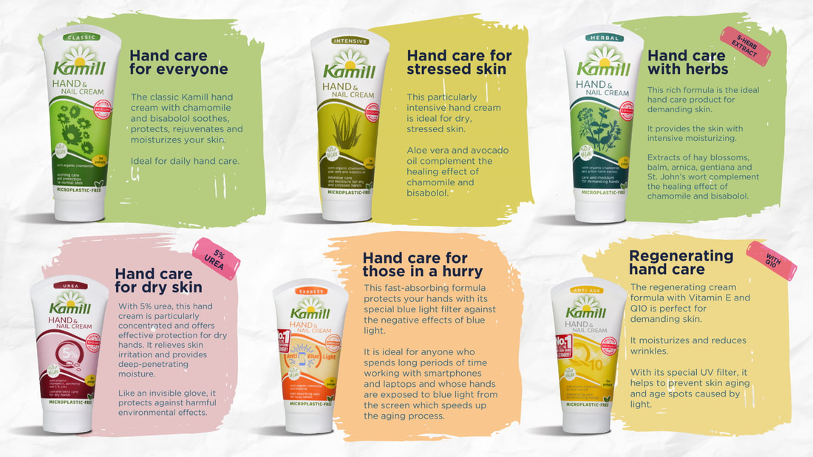
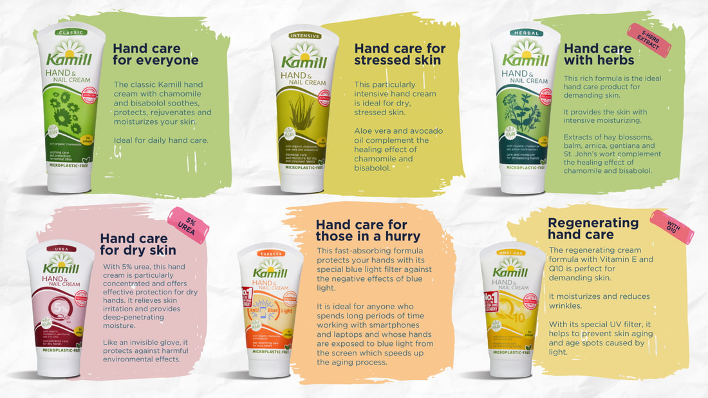

Kamill.
Germany's Top Selling Hand Cream
Organic German Chamomile
Kamill takes responsibility.
Germany's Top Selling Hand Cream
Organic German Chamomile
Kamill takes responsibility.
Kamill products are WITHOUT colorants,
parabens, PEG emulsifiers, mineral oils,
paraffins, animal products.
 

Kamill has 97% Market Distributed in Germany and is the best-selling hand cream brand in Germany for 8 Years in a row (2012-2019), both in pharmacies and in hypermarkets. *Source: Nielsen Market Track, hand care, sales in packs, LEH +DM + KWH, 2012-2019
Kamill is recognized as a TOP brand in 2016 by the Lebensmittel Zeitung (Germany's leading retail & FMCG trade newspaper) *This award was determined in a representative survey of 30,000 households, objectively verifiable parameters developed with GfK (Germany Consumer Research Association) decide on the winners.
Kamill only uses certified organic chamomile from controlled cultivation. This means environmentally friendly agricultural production and a product that is low in pollutants, because organic cultivation dispenses with synthetic pesticides, mineral fertilizers and genetic engineering.
Burnus GmbH was established in 1836 at Darmstadt, where the Rhines met the Main near the great city of Frankfurt. Dramstadt is called the technology city of Germany and origin of the European Art Nouveau. Burnus GmbH is the central enterprise of the Burnus Group, which has grown to become a globally active group of companies today. Every day, millions of customers throughout the world put their trust in Burnus consumer products. The Burnus Group has offered effective products for more than 100 years.